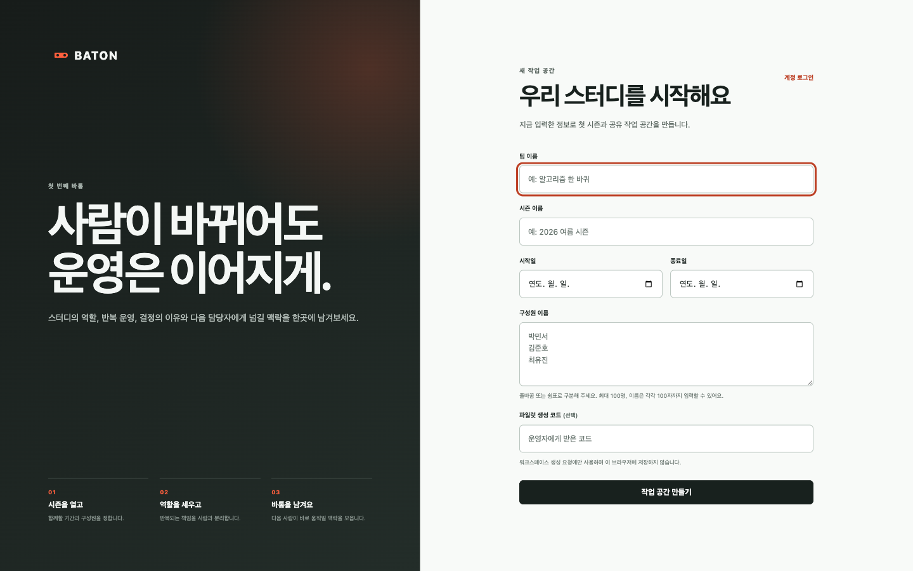
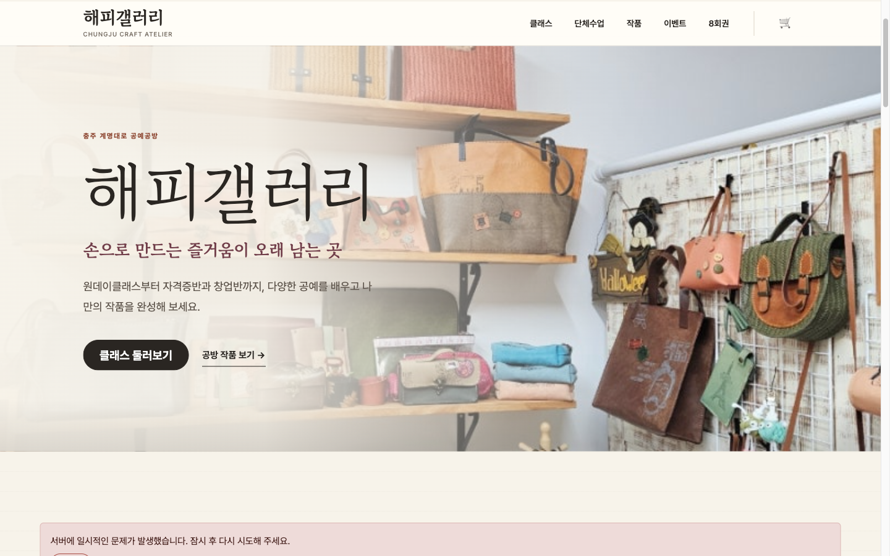

경계를 먼저 정합니다
데이터 소유권, 트랜잭션 범위, 서비스별 책임을 먼저 나눕니다.
임정규 / 백엔드 개발자
공공 시스템에서 기능 개발과 운영 장애를 대응했고, 개인 프로젝트에서는 멱등성, 데이터 정합성, 복구 경로를 코드와 테스트로 구체화했습니다.
동시에 들어온 같은 링크 생성 요청을 1건으로 처리
OpenAPI operations / REST Docs tests
기관 연계 배치 개발 및 운영 대응
WORKING PRINCIPLES
기능이 정상 동작하는 순간뿐 아니라 중복 요청, 외부 연동 실패, 재시작 뒤의 상태까지 한 흐름으로 봅니다.
데이터 소유권, 트랜잭션 범위, 서비스별 책임을 먼저 나눕니다.
멱등 키, 락, 아웃박스와 복구 작업으로 실패 뒤의 동작을 정의합니다.
ADR, API 계약, 통합 테스트와 로그로 설계 이유와 결과를 확인합니다.
차세대 군사법 정보 시스템 군교정 부문에서 기관 연계 배치, 보안 기능, 로그 및 DB 기반 장애 대응을 담당했습니다.
레거시 환경의 안정적인 변경 경험과 현대 아키텍처의 확장성 사이에서, 실제 운영에 필요한 수준의 구조를 선택합니다.
POLICY-AWARE BACKEND SERVICES
Core를 조직 운영의 기준으로 두고, 링크 생성, URL 점검, 메시지 전송을 각기 다른 실패 모델을 가진 서비스로 분리했습니다.

팀, 시즌, 권한, 루틴, 핸드오프의 기준 데이터를 관리합니다.
UUID 멱등 키와 HMAC-SHA256. 동시 요청 8 → 1.
374 testsDNS pinning 기반 SSRF 방어, lease/revision fencing, transactional outbox.
271 testsinbox dedupe, SKIP LOCKED와 lease token. 결과 불명은 OUTCOME_UNKNOWN으로 보존.
373 testsCOMMERCE & BOOKING
상품 판매, 클래스 예약, 이용권과 알림 흐름에서 외부 응답 누락과 동시 변경을 안전하게 다시 처리하도록 설계했습니다.

orderId로 요청을 묶고 processingToken을 가진
작업만 상태를 바꿉니다. 결과가 불명확하면 PG를 조회하고, 환불 재시도에는
같은 UUID를 재사용합니다.
업무 변경과 알림 outbox를 같은 트랜잭션에 저장합니다.
AFTER_COMMIT으로 즉시 전송하고 누락이나 실패는 스케줄러가
다시 가져갑니다.
예약은 클래스 다음 슬롯 PK 순서, 재고는 productId 오름차순으로 비관적 락을 획득해 초과 처리와 교착 위험을 줄입니다.
PUBLIC SI / CLOSED NETWORK
폐쇄망과 레거시 환경에서 군교정 기능, 기관 연계 배치, 보안 기능을 개발하고 로그와 DB를 기준으로 운영 장애를 분석했습니다.
실행 결과 → 서버 로그 → DB 반영 → 화면 조회
검증 · 반영 · 운영 대응
서로 다른 데이터 형식과 실행 조건을 반영해 배치 3종을 구현하고, Jenkins에서 실행과 재처리 흐름을 관리했습니다.
Spring Security CSRF 토큰을 기존 화면 흐름에 연결하고, Apache Tika로 확장자와 실제 파일 형식을 함께 확인했습니다.
입력 데이터, 배치 실행 로그, DB 반영 결과, 화면 조회를 순서대로 비교해 처리 중단 지점을 찾고 복구했습니다.
보안이 필요한 프로젝트이므로 기관과 실제 데이터는 공개하지 않고, 직접 개발하고 대응한 범위만 정리했습니다.
APPLIED SKILLS
개인 프로젝트의 현대 스택과 공공 SI의 레거시 환경에서 기능 개발
업무 데이터 모델링, 동시성 제어, 스키마 변경과 장애 데이터 분석
중복 요청 방지, 외부 연동 결과 불명 처리, 실패 작업 재시도
HTTP 계약, 트랜잭션 경계, 동시 요청과 복구 경로 검증
제품 화면 구현, 로컬 실행 환경, 공공 시스템 연계 배치 운영
안정적으로 바꾸고,
실패해도 다시 이어지는 시스템을 만듭니다.